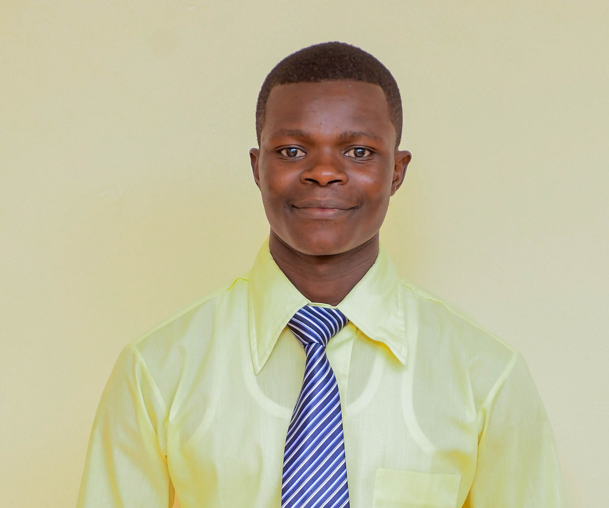
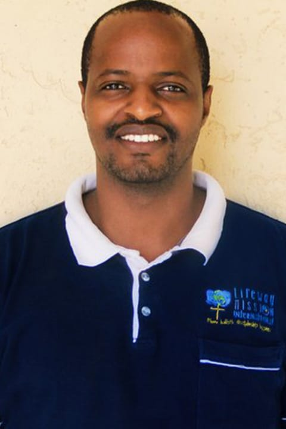
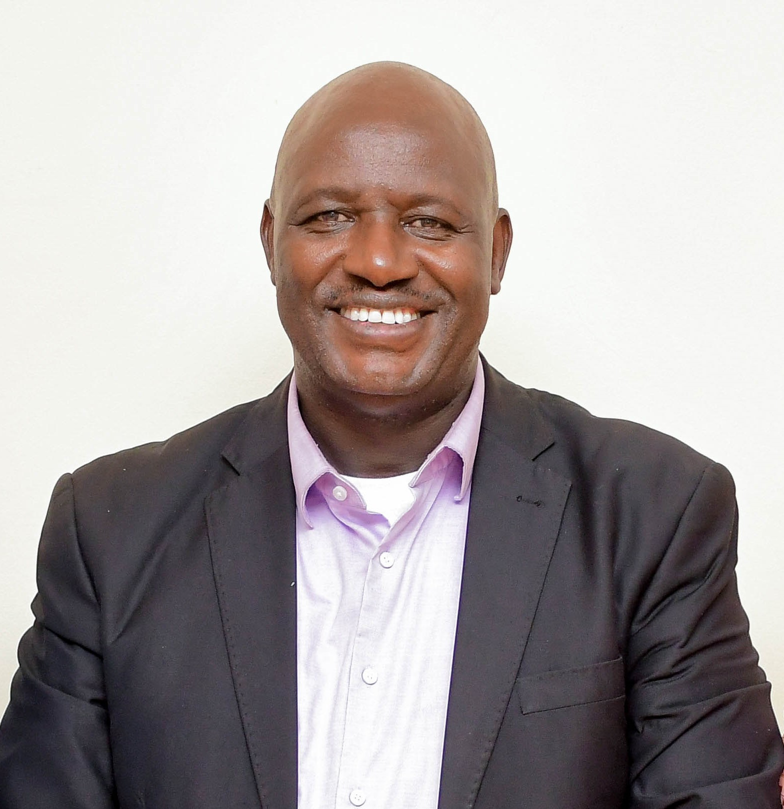
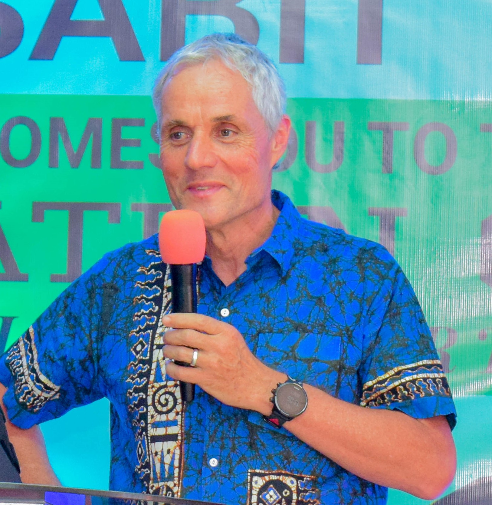

Bsc.Community Development, Chuka University
provides overall leadership and management of the institution, overseeing academic programs,
staff performance, student welfare, and strategic development to ensure quality education and institutional growth.
A passionate leader committed to excellence and mentoring the next generation of professionals.
Mrs. Galmo Wako
Director Online & Distance Learning
BSc. Nutrition & Dietetics, Karatina University
Oversees the development, implementation, and quality assurance of virtual learning programs,
ensuring accessible, flexible, and effective education for remote learners.
Miss Sharon Tallam
Director Discipline and Welfare
BSc. Nutrition & Dietetics, Baraton University of East Africa
Responsible for enforcing student conduct policies, handling disciplinary matters, and promoting student well-being
through guidance, support services, and a safe, respectful learning environment.
Mr. Devison Mwamburi
Accademic Cordinator & Students Affairs
BSc. Information Communication & Technology, Kissi University
Ensures smooth academic operations and supports student welfare by coordinating programs,
addressing student needs, and enhancing the overall learning experience.

Mr. Ambrose Oduor
Teaching & Timetabling Director
BSc. Community Health and Development, Jomo Kenyatta University of Agriculture & Technology
Responsible for organizing teaching schedules, allocating classrooms, coordinating faculty workloads,
and ensuring the effective delivery of the academic timetable.
Visionary leader who believes in education as a tool for community transformation.
Sir. Philip Okello
Media & Publicity Director
BSc. Community Health and Development, Meru University of Science & Technology
Responsible for promoting the institution’s image by managing communications, creating content, handling media relations,
and overseeing publicity campaigns across digital and traditional platforms.
Purpose-driven leader and creative educator who blends faith, learning, and community empowerment to uplift others
through practical action, thoughtful communication, and deep compassion.

John Diba)
Lifeway Global Dept.ED
MSc. Business Management, KCA University
Overseeing operations, implementing strategic plans, managing Lifeway Glogal departments,
and ensuring organizational goals are met efficiently and effectively.

Dr. Aila Tasse
Founder & President Lifeway Global
PhD. Transformational leadership, Bakke Graduate University
Executive Director, Lifeway Global | Global Speaker | Transformative Leadership Coach
Dedicated to equipping leaders with the skills and mindset to lead with purpose and impact.
With a passion for personal growth and community transformation,
he inspires change through coaching, strategic leadership, and values-driven engagement..

Tom (Missionary)
Partnering Missionary
Supporter and spiritual guide for the LINK family, walking alongside students in faith and purpose.